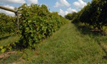
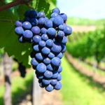

Ya en 1960 Pedro García, hijo y nieto de vinicultores, había construido una bodega y
empezaba a ampliar los viñedos familiares. Posteriormente, en 1975, adquiere sus primeras
viñas en el paraje de Los Vientos.
Durante los siguientes años y hasta principios de los 80 con la adquisición de la primera
línea de embotellado, Pedro no cesa en su empeño por la modernización y la calidad.
Incorporación familiar

A inicios de los 90, ya incorporados sus tres hijos, Antonio, Carlos y David al equipo de la
bodega, comienza la andadura internacional, con presencia en las ferias de mayor
relevancia en el sector, viajes de prospección, presentaciones y catas. Es este el momento
de los primeros reconocimientos y distinciones tanto a nivel nacional como internacional. La
inmersión en nuevos mercados provoca la necesidad de un mayor desarrollo tecnológico de
las instalaciones en pro de la calidad y una mayor competitibidad.
Equipos de Maceración
Se sucede paulatinamente la adquisición de los equipos de maceración, estabilización y
vinificación más modernos en el mercado:
Maceración carbónica con mesa de selección.
Maceradores tradicionales con control de temperatura.
Depósitos maceradores "Sistema Ganymede"
Depósitos medianos y pequeños que permitan vinificaciones selectivas.

Y se mejoran gradualmente las líneas de producción con los más prácticos sistemas de
embotellado, etiquetado y envasado.